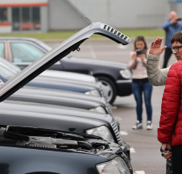
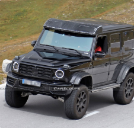
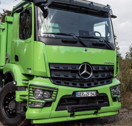
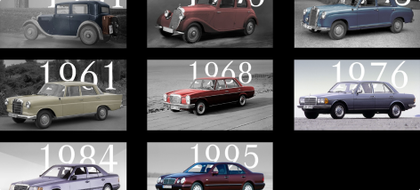
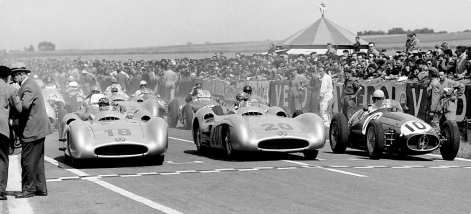

Подарки и распродажа на Монро24!
Эксклюзивные купоны новичкам!

Для ценителей. Под Минском прошел слет легендарных Mercedes-Benz
Под Минском прошел слет легенды лихих 90-х — Mercedes-Benz W140. Даже в 2020 году
эта марка авто не нуждается в особом представлении, хотя в последний раз она сошла с
конвейера еще в июле 1998 года. Вчера автомобильное сообщество W140 Belarus устроило
республиканский слет.

Mercedes снова готовит G-Class с огромным дорожным просветом
Представленный пять лет назад Mercedes G500/G550 4×4² (еще в старом кузове) не
останется единственным «Геликом» с огромными колесами и внушительным клиренсом.
Шпионские фотографии Carscoops подтверждают, что скоро на рынок выйдет
преемник.

Камеры вместо зеркал теперь будут ставить и на строительные грузовики Mercedes-Benz
Коронавирус нарушил планы всех производителей, но жизнь не останавливается. Несмотря
на отмену крупнейшего салона коммерческих автомобилей IAA 2020, ведущие
производители презентуют свои новинки в режиме онлайн.

Путешествие по истории E-Class с 1931 по 1995 год.
10.07.2019
